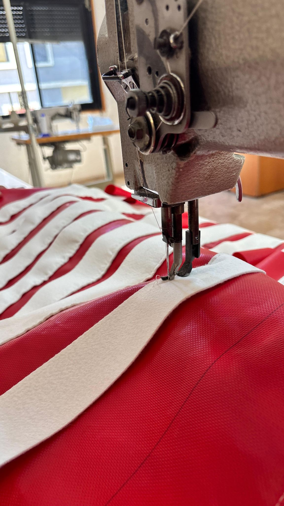

01 / AIR FILTRATION
Cleaner air.
Discuss your air filtration needs
Cleaner air.
Reliable performance.
Industrial filter bags designed to capture dust and fine particles while maintaining dependable performance in demanding environments.
Low temperature
Filtration solutions for standard industrial processes.
High temperature
Durable solutions for demanding high-heat applications.